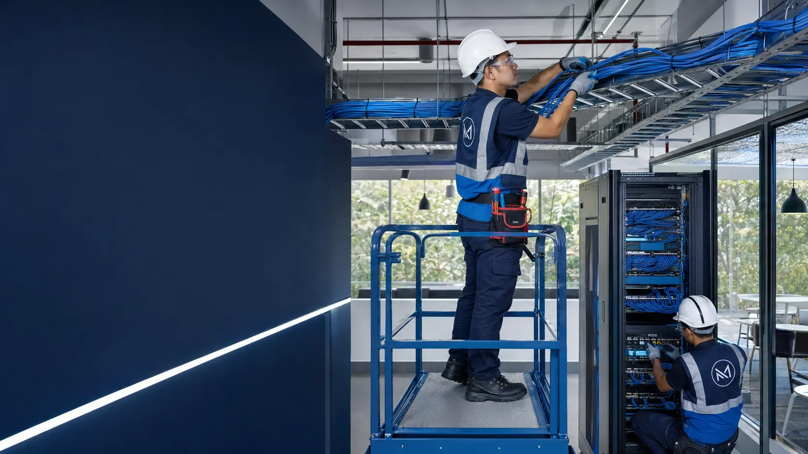
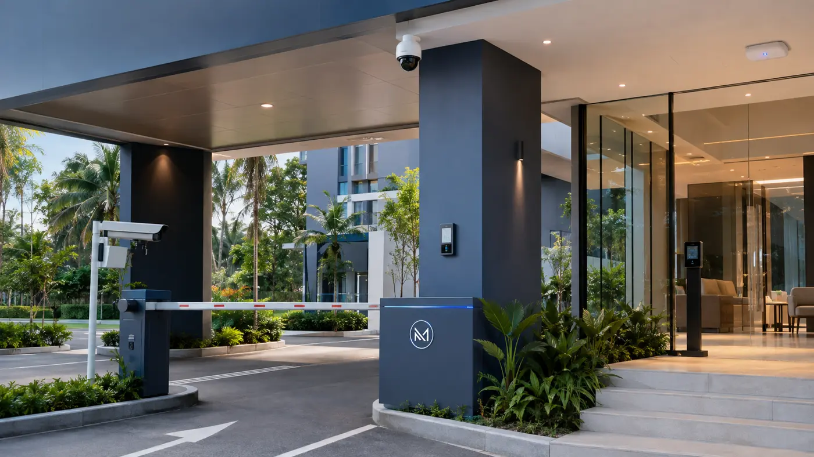

IT System
Computers, servers, NAS, printers, software licensing and responsive technical support.
View system →PENANG IT & SECURITY SYSTEM INTEGRATOR
We plan, supply, install and support your IT, networking, CCTV, alarm, door access and ANPR systems as one connected solution.
PROFESSIONAL STRUCTURED CABLING · PENANG
Our trained technicians plan cable routes, pull CAT6 and fibre, terminate, label and test every connection—safely and professionally for commercial sites.

SIX CORE SYSTEMS
We plan, supply, install and support each system as part of one complete business solution—not a collection of separate products.
Computers, servers, NAS, printers, software licensing and responsive technical support.
View system →Structured cabling, fibre, switches, firewall and enterprise Wi-Fi for stable operations.
View system →Professional surveillance, remote monitoring and intelligent video analytics.
View system →Reliable detection, alerts, sirens and mobile app control for faster response.
View system →Face recognition, card access, magnetic locks and controlled entry management.
View system →Automatic number plate recognition, vehicle records and barrier gate integration.
View system →COMMERCIAL SYSTEMS FOR PENANG
Every commercial site is different. We combine the right technology, installation method and support plan for the way your business operates.

ANPR · CCTV · Door Access · Alarm · Network Infrastructure

IT · Server · Network · CCTV · Door Access

Wi-Fi · POS · Printer · CCTV · Alarm

ANPR · Barrier Gate · CCTV · Intercom · Door Access
BUILT FOR PENANG COMMERCIAL SITES
From an office opening and café network to a factory-wide infrastructure or condominium security upgrade, we design around your operations, environment and budget.
George Town · Bayan Lepas · Prai · Butterworth · Bukit Mertajam · Juru · Batu Kawan · Simpang Ampat · Nibong Tebal
Kulim · Lunas · Sungai Petani · Parit Buntar
READY TO BUILD IT PROPERLY?